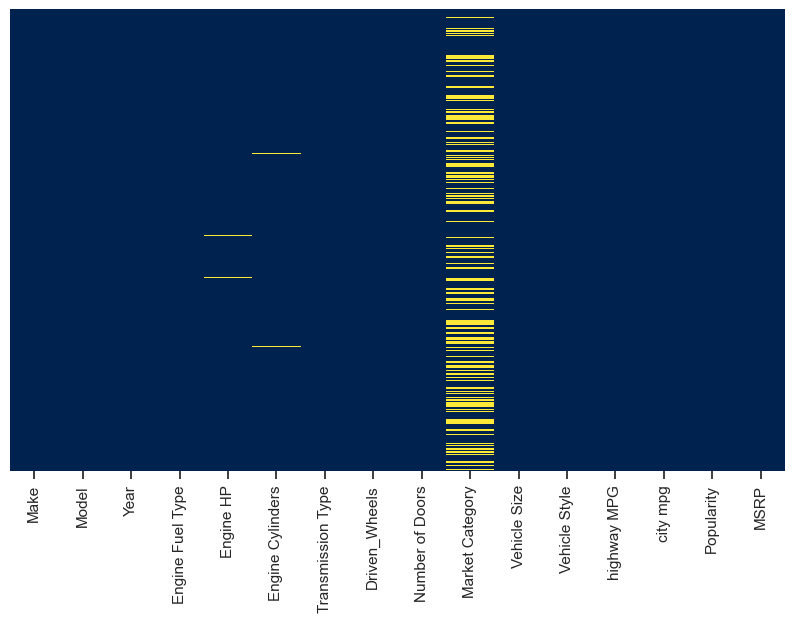
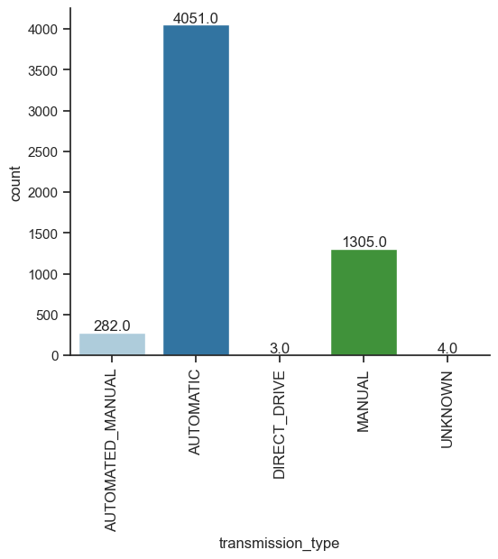
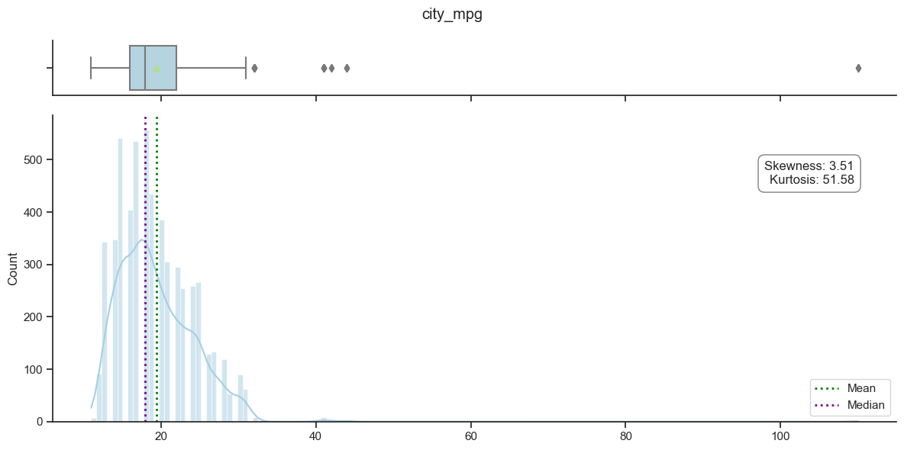
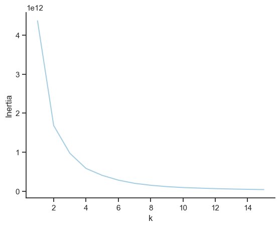

Analytics Pipeline
in Python
In this project, I analysed car prices and features in Python which was special to me as I completed two internships in the automotive industry. I will use data cleaning, feature engineering and machine learning.
The Data
The chosen dataset pertains to car features and prices, sourced from Kaggle. This dataset was selected due to its comprehensive coverage of car attributes, including make, model, engine specifications, fuel type, and pricing, which are pivotal for constructing predictive models for car prices and understanding market dynamics.
A meticulous data cleaning and preparation process was undertaken to ensure the dataset's quality and relevance. This involved removing duplicates, handling missing values judiciously, and focusing on the most represented makes and models to ensure a robust dataset for analysis. For instance, missing values for engine horsepower were researched and imputed based on specific models, exemplifying a rigorous approach to data integrity.
Statistical assessment revealed insights into variable distributions and potential outliers. For example, outliers in the highway_mpg variable were carefully evaluated and corrected based on external research, demonstrating the depth of analysis conducted to ensure data accuracy.
The dataset was also scrutinized for compliance with data protection regulations, such as GDPR, to emphasize privacy and security considerations. Although the dataset primarily consists of publicly available information on car specifications and does not directly involve personal data, the commitment to adhering to privacy standards underscores the thoroughness and ethical considerations of the analysis process.
The processed dataset now serves as a solid foundation for advanced analytics and machine learning applications. It enables the exploration of relationships between various car features and prices, facilitating the development of predictive models for car valuation and market trend analysis. This careful selection and preparation of the dataset underscore a profound understanding of its relevance and potential applications, ensuring that the data's integrity and the analysis's compliance with ethical standards are upheld.
Data Preporcessing
Initially, the dataset underwent cleaning to remove duplicates and handle missing values. This was not a mere exclusion of incomplete rows but involved strategic imputation based on external research for variables like engine horsepower. In addition, outliers were removed using the IQR method based on visualizations, illustrating the nuanced approach to preparing the dataset. Feature engineering further enhanced the dataset's utility for modeling. Categorizing the number of doors and calculating engine efficiency transformed raw data into meaningful attributes that could significantly influence model predictions. For instance, converting door numbers into categories like "Two-door" and "Four-door" aligns with market segmentation practices, while engine efficiency provides a nuanced measure of performance relative to engine size.
The creation of dummy variables from categorical data represents another sophisticated preprocessing step, pivotal for the success of machine learning models. This technique transforms categorical variables into a format that can be provided to machine-learning algorithms to better understand patterns and relationships. For instance, turning car makes and models into dummy variables allow models to capture the influence of specific brands and types on car prices. By converting categorical attributes into binary variables, we preserve the informational value of these attributes without imposing ordinality, which could mislead the model.
The meticulous data preprocessing, feature engineering and transformation into dummy variables underscore the project's comprehensive approach to preparing the dataset for advanced analytics. These steps significantly contribute to the reliability and robustness of the resulting machine-learning models. For an in-depth understanding of the impact of these preprocessing techniques and their implementation, examining the provided code offers valuable insights into their crucial role in the project's success.
Analytics and Machine Learning
In the project, machine learning (ML) techniques were adeptly applied to analyze car features and prices, leveraging both supervised and unsupervised learning methods. Linear Regression and K-Means clustering were chosen for their distinct capabilities to unravel the dataset's complexities and extract meaningful insights.
Linear Regression (Supervised Learning) was employed to predict car prices based on a multitude of features such as make, model, engine specifications, and more. This method was selected due to its efficiency in handling continuous data, making it ideal for price predictions. The linear relationship assumption between the features and the target variable (car price) allowed for an intuitive understanding and interpretation of how different features influence car prices. The model's performance, assessed through metrics like the R² score and explained variance, indicated a high level of accuracy, demonstrating the predictive power and relevance of the chosen features.
K-Means (Unsupervised Learning), on the other hand, was utilized to segment the cars into clusters based on their features, without any predefined labels. This approach was instrumental in identifying inherent groupings or patterns within the data, such as similarities in car specifications or categories. By analyzing these clusters, insights into market segmentation and potential niche markets were uncovered, providing valuable information for targeted marketing strategies and product development.
Together, these ML techniques facilitated a comprehensive analysis of the dataset. Linear Regression offered precise predictions and insights into feature importance for car pricing, while K-Means revealed natural groupings within the cars, highlighting similarities and differences that might not be immediately obvious. This dual approach exemplified the power of combining supervised and unsupervised learning to derive both predictive insights and deeper understanding of the data structure.
Excursion: Visualisation for Data Processing
In this project, visualizations played a crucial role in the processing and analysis of both numerical and categorical data, as well as in determining the optimal number of clusters for K-Means clustering, showcasing exceptional design and aesthetics to enhance user understanding.  Missing Values Visualization: To address and manage missing values in the dataset, the project utilized heatmap visualizations, which provided a powerful and intuitive graphical representation of data completeness across different variables. Heatmaps highlighted the presence and distribution of missing values in a color-coded format, making it easy to identify patterns of missingness, whether random or systematic, across the dataset.  Categorical Data Visualization: Categorical variables were explored through bar plots, which illustrated the frequency distribution of categories within each feature. This was particularly useful for understanding the diversity in car makes, models, and fuel types, aiding in the identification of dominant categories and potential biases in the data. Such visualizations supported decisions on data encoding and simplification, ensuring that the models would not be unduly influenced by categories with sparse representation.  Numerical Data Visualization: For numerical data, histograms and box plots were utilized to assess the distribution and identify outliers. Histograms provided insights into the skewness and kurtosis, offering a visual representation of the data's spread and symmetry. Box plots complemented this by highlighting median values and potential outliers, allowing for a concise overview of data variability and extreme values. These visualizations facilitated informed decisions regarding data normalization and outlier treatment, crucial steps in preprocessing data for machine learning models.  K-Means Inertia Plot: To determine the optimal number of clusters for K-Means clustering, an inertia plot was created. Inertia measures the within-cluster sum of squares, and plotting these values against the number of clusters revealed the "elbow point" – a key indicator of the most appropriate cluster count. This visualization was instrumental in selecting the number of clusters that balanced complexity with meaningful segmentation, thereby maximizing the interpretability and utility of the clustering outcomes.